Before we introduce this bridge let us know more about the uses of mutual inductor in bridge circuits. Now one question must arise in our mind that why we are so much interested in mutual inductance, answer to this question is very simple we will use this mutual inductor in Heaviside bridge circuit. We use standard mutual inductor in finding out the the value of unknown mutual inductor in various circuits. Mutual inductor is used in various circuits as main component in determining the value of self inductance, capacitance and frequency etc. But in many industries the use of mutual inductor in finding out the value of known self inductor is not practices because we have various other accurate methods for finding out self inductor and capacitance and these other methods may include the use of standard capacitor which are available at cheaper rate. However there may be some merits of use mutual inductor in some cases but this field is very vast. Many researches are going on the application of mutual inductor in bridge circuits. In order to understand the mathematical part of Heaviside bridge, we need to derive the mathematical relation between self inductor and mutual inductor in two coils connected in series combination. Here we interested in finding out the expression for mutual inductor in terms of self inductance.
Let us consider two coils connected in series as shown in figure given below.

Such that the magnetic fields are additive, the resultant inductor of these two can be calculated as
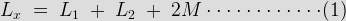
Where L1 is the self inductor of first coil,
L2 is the self inductor of second coil,
M is the mutual inductor of these two coils.
Now if the connections of any one of the coils is reversed then we have
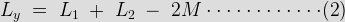
On solving these two equations we have
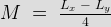
Thus the mutual inductor of the two coils connected in series is given by one-fourth of the difference between the measured value of self inductor when taking the direction of field in the same direction and value of self inductor when the direction of field is reversed.
However one needs to have the two series coils on the same axis in order to get most accurate result. Let us consider the circuit of Heaviside mutual inductor bridge, given below,

Heaviside Bridge
Main application of this bridge in industries is to measure the mutual inductor in terms of self inductance. Circuit of this bridge consists of four non inductive resistors r1, r2, r3 and r4 connected on arms 1-2, 2-3, 3-4 and 4-1 respectively. In series of this bridge circuit an unknown mutual inductor is connected. A voltage is applied to across terminals 1 and 3. At balance point electric current flows through 2-4 is zero hence the voltage drop across 2-3 is equal to voltage drop across 4-3. So by equating the voltage drops of 2-4 and 4-3 we have,
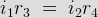
Also we have,
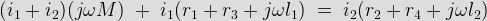
\;=\;i_2(r_2+r_4+j\omega l_2)")
\;+\;\frac{r_4}{r_3}r_1\;+\;r_4\;+\;j\omega l_1\frac{r_4}{r_3}\;=\;r_2+r_4+j\omega l_2")
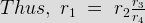
and mutual inductor is given by,
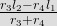
Let us consider some special case,
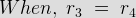
In this case the mutual inductor is reduced to
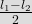
Now let us consider the circuit of Campbell's Heaviside bridge given below:
Modified Heaviside Bridge
This is the modified Heaviside bridge. This bridge is used to measure the unknown value of self inductor in terms of mutual inductance.The modification is due to addition of balancing coil l, and R in arm 1 - 4 and also electrical resistance r is included in arm 1-2. Short circuit switching is connected across r2 and l2 in order to have two sets of readings one while short circuiting r2 and l2 and other while open circuiting r2 and l2.
Now let us derive the expression for self inductor for this modified Heaviside bridge. Also let us assume that the value of M and r with switch open be M1 and r1, M2 and r2 with switch closed.
For open switch, we have at balance point,
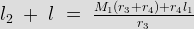
and with closed switch we can write
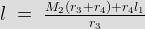
Thus we final expression for self inductor
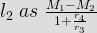
 by
by